One frozen prompt, six models, eight teaching scenarios. Each card is a board exactly as the model drew it. Click a board to watch it being written. Verdicts come from a blind review (model names hidden until scoring was done).
B24 · Seasons pass
Question: Why do we have seasons?
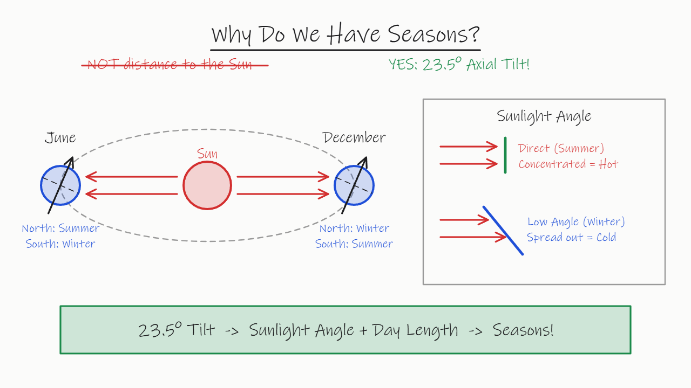
June/December tilt consistent, plus direct vs low-angle panel and summary
content 1 · figure matches text 1 · layout 2/2 · complete 1
B62 · Pythagoras pass
Question: Why does the Pythagorean theorem work?
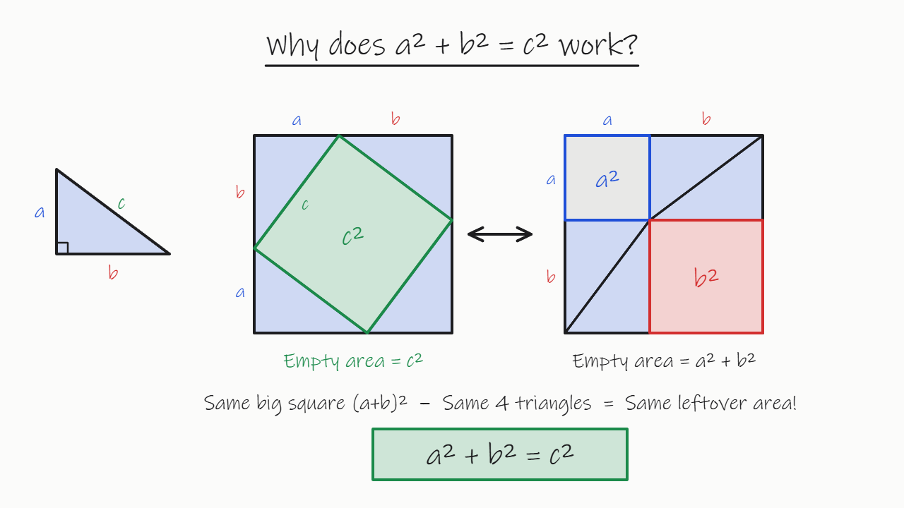
two-arrangement proof, geometry and labels exact
content 1 · figure matches text 1 · layout 2/2 · complete 1
B10 · Quadratic pass
Question: Solve x² − 5x + 6 = 0. (Switch to a simpler method midway.)
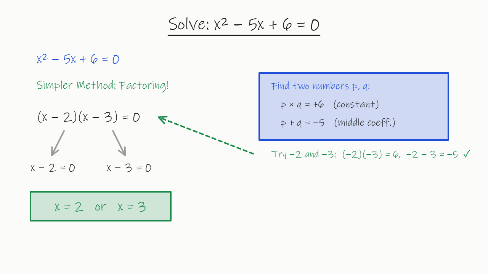
completing the square tried, erased, then factoring; clean
content 1 · figure matches text 1 · layout 2/2 · complete 1
B13 · Supply & demand pass
Question: What happens to the price when demand rises?
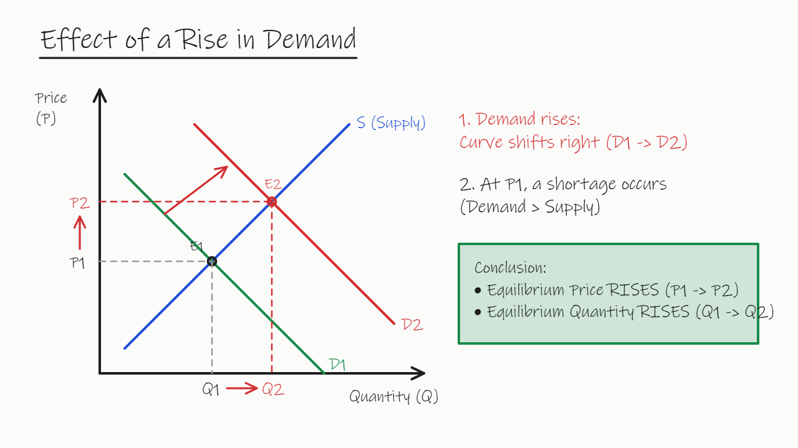
both equilibria exact; conclusion text slightly overflows its box
content 1 · figure matches text 1 · layout 1/2 · complete 1
B46 · Photosynthesis (zh) pass
Question: 光合作用发生在细胞的哪个部分？
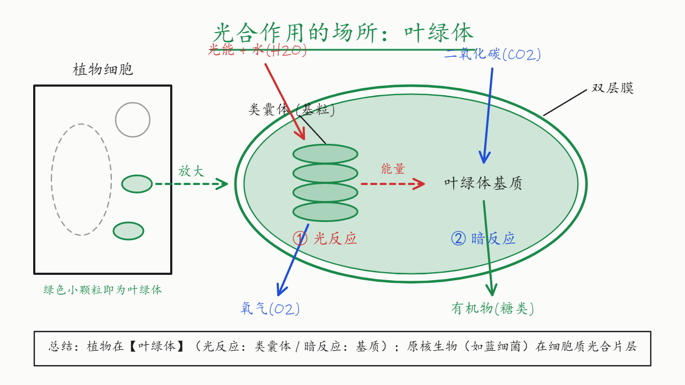
richest content (cell -> zoom -> light and dark reactions, inputs and outputs, prokaryote exception); title area overlapped by two labels
content 1 · figure matches text 1 · layout 1/2 · complete 1
B44 · Interrupt 1 · seasons pass
Question: Wait — in northern summer, isn't Earth farther from the Sun? Why is it hotter then?
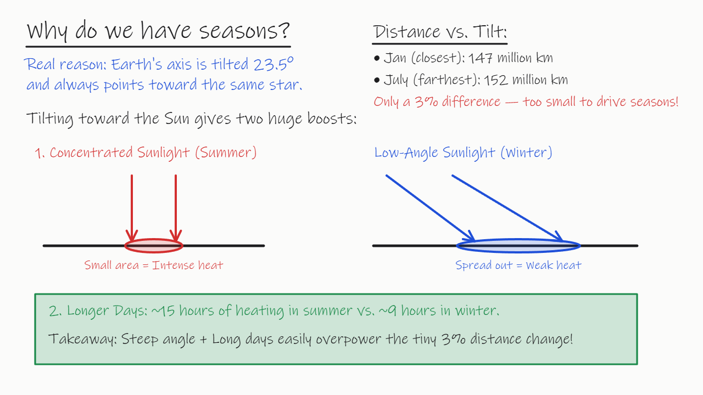
best answer: 147 vs 152 million km = 3%, then angle and day length; but it wiped the existing orbit diagram to do it
content 1 · figure matches text 1 · layout 2/2 · complete 1 · answers the student 1 · keeps the board intact 0
B42 · Interrupt 2 · supply & demand pass
Question: I don't get the demand shift. Can you show it a simpler way?
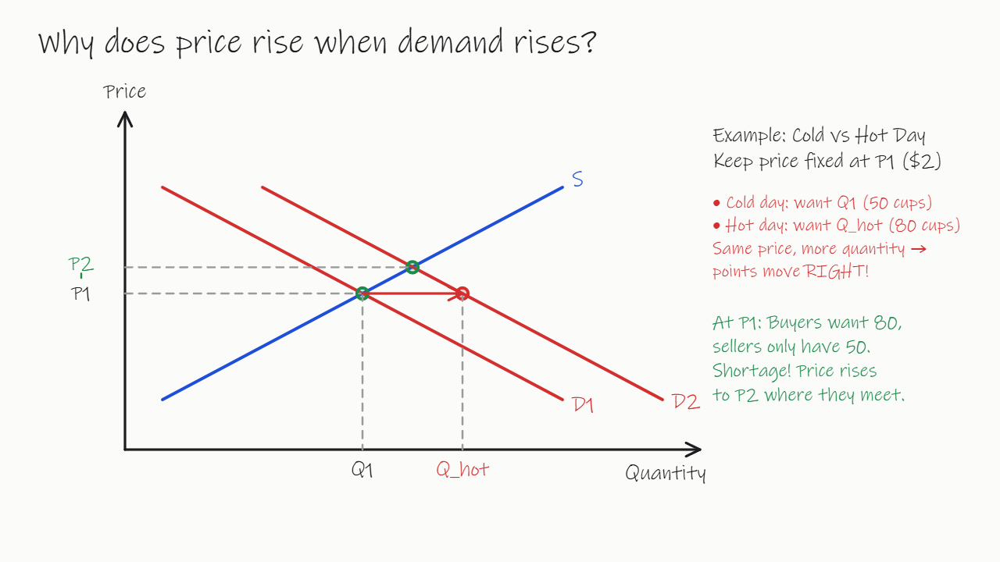
cold vs hot day with numbers (50 then 80 cups), same-price point and E2 exact
content 1 · figure matches text 1 · layout 2/2 · complete 1 · answers the student 1 · keeps the board intact 1
B11 · Interrupt 3 · arrow pass
Question: What does this arrow mean?
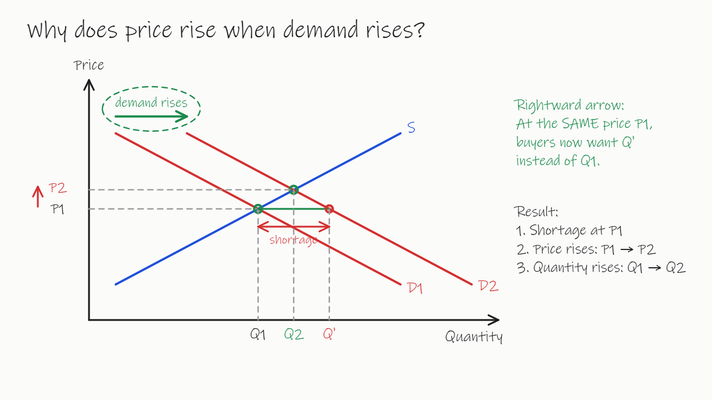
E2 and the same-price point Q' both exact; shows the shortage at P1; one label crossed by D1
content 1 · figure matches text 1 · layout 1/2 · complete 1 · answers the student 1 · keeps the board intact 1
B55 · Seasons pass
Question: Why do we have seasons?
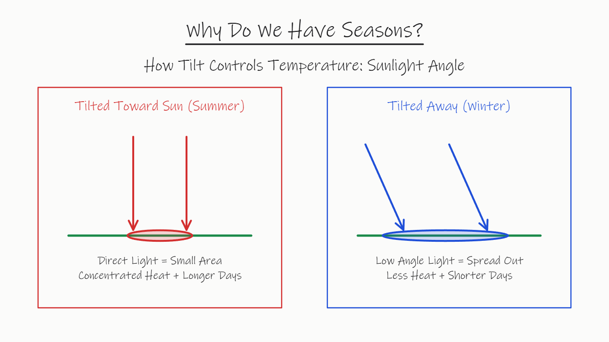
final board: two clean panels, toward vs away; the four-position orbit diagram shown before the erase is consistent
content 1 · figure matches text 1 · layout 2/2 · complete 1
B07 · Supply & demand pass
Question: What happens to the price when demand rises?
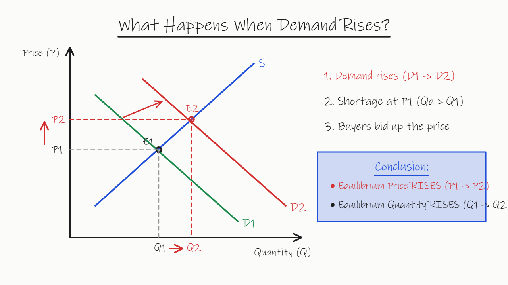
both equilibria on the crossings; conclusion text overflows its box and the board edge
content 1 · figure matches text 1 · layout 1/2 · complete 1
B41 · Interrupt 2 · supply & demand pass
Question: I don't get the demand shift. Can you show it a simpler way?
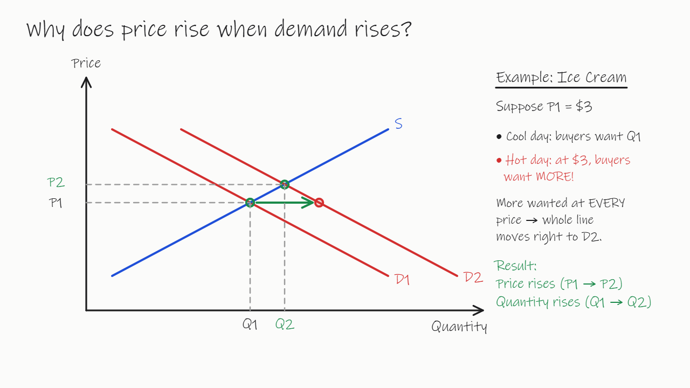
ice-cream example tied to the chart: same-price point and E2 exact, result stated
content 1 · figure matches text 1 · layout 2/2 · complete 1 · answers the student 1 · keeps the board intact 1
B04 · Seasons fail
Question: Why do we have seasons?
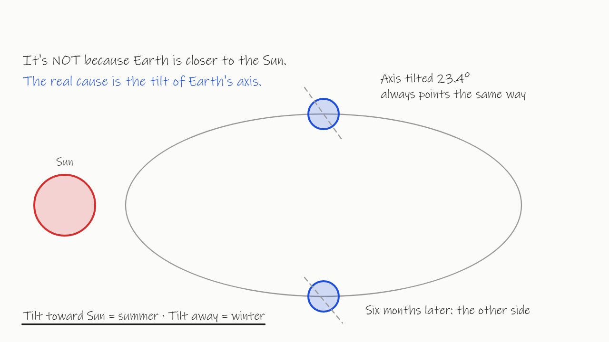
the Sun is drawn outside Earth's orbit; both Earth positions tilt the same way relative to the Sun, so summer vs winter is never shown; no title
content 0 · figure matches text 0 · layout 2/2 · complete 0
B01 · Pythagoras pass
Question: Why does the Pythagorean theorem work?
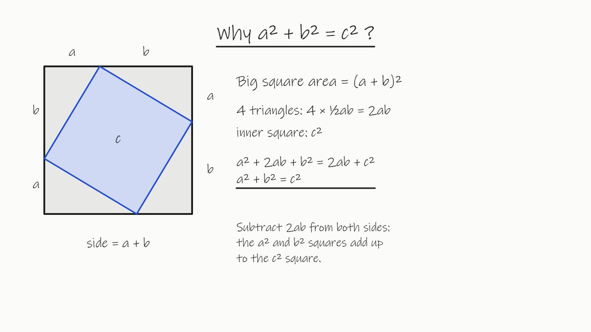
board proof valid; narration step 3 says the tilted square has side c 'by the relation we want to show' (circular wording)
content 1 · figure matches text 1 · layout 2/2 · complete 1
B18 · Quadratic pass
Question: Solve x² − 5x + 6 = 0. (Switch to a simpler method midway.)
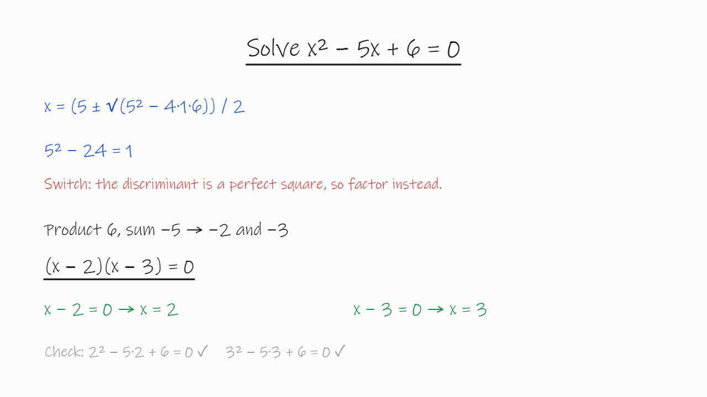
formula -> discriminant 1 -> switch to factoring; includes check
content 1 · figure matches text 1 · layout 2/2 · complete 1
B58 · Supply & demand pass
Question: What happens to the price when demand rises?
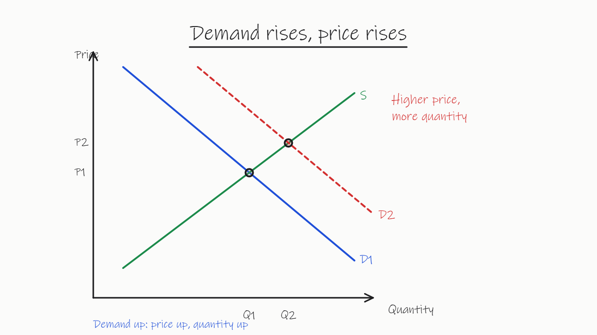
both equilibria exact; Price label crossed by the axis arrow; last line close to the bottom edge
content 1 · figure matches text 1 · layout 1/2 · complete 1
B26 · Photosynthesis (zh) pass
Question: 光合作用发生在细胞的哪个部分？
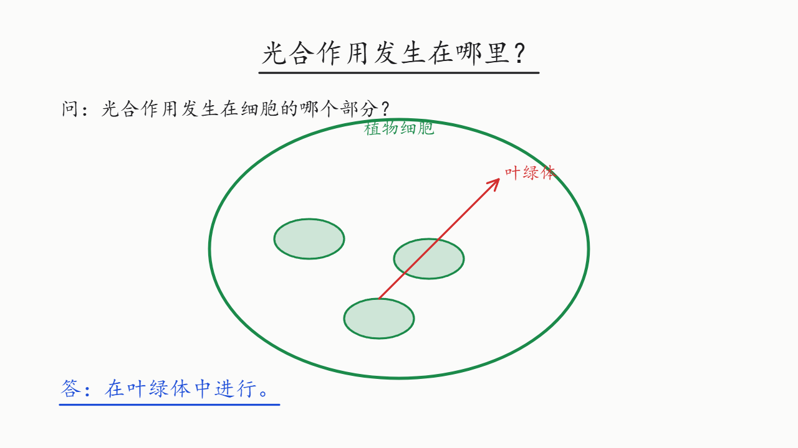
correct but thin (4 steps); cell label sits on the outline, arrow runs through another chloroplast
content 1 · figure matches text 1 · layout 1/2 · complete 1
B17 · Interrupt 1 · seasons pass
Question: Wait — in northern summer, isn't Earth farther from the Sun? Why is it hotter then?
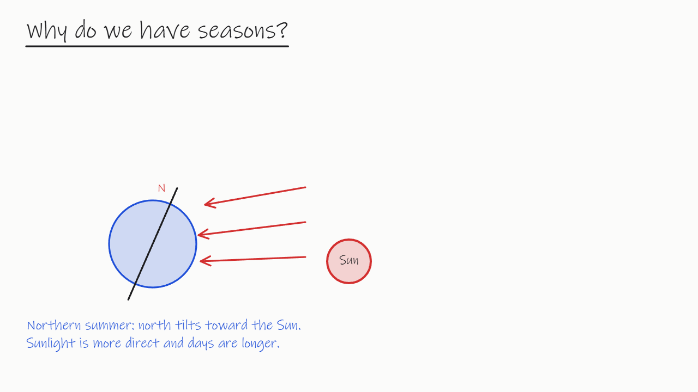
wiped the whole orbit diagram and drew a new zoomed Earth; correct and clean, answer about July given in narration only
content 1 · figure matches text 1 · layout 2/2 · complete 1 · answers the student 1 · keeps the board intact 0
B59 · Interrupt 2 · supply & demand pass
Question: I don't get the demand shift. Can you show it a simpler way?
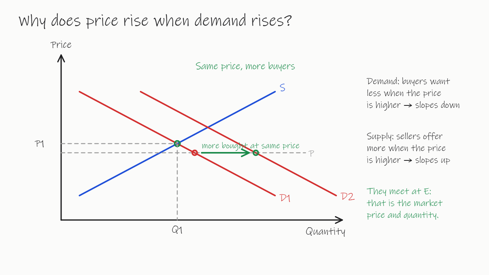
fixed-price line with both points exact; D2 redrawn further right; a label crossed by D2; narration mentions a point B that is not labelled
content 1 · figure matches text 1 · layout 1/2 · complete 1 · answers the student 1 · keeps the board intact 1
B05 · Interrupt 3 · arrow fail
Question: What does this arrow mean?
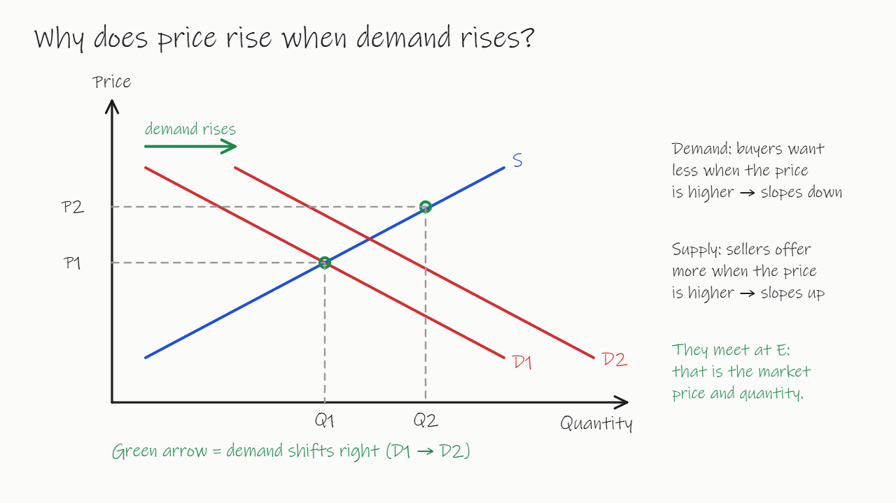
explanation right, but E2 is marked on the supply line far beyond the D2-S crossing
content 1 · figure matches text 0 · layout 2/2 · complete 1 · answers the student 1 · keeps the board intact 1
B36 · Seasons pass
Question: Why do we have seasons?
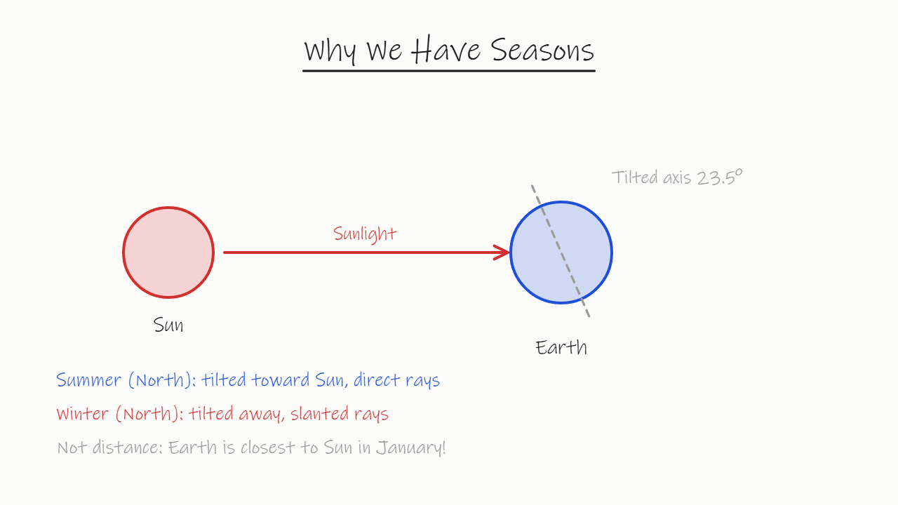
correct and clean but only the summer position is drawn; mentions closest in January
content 1 · figure matches text 1 · layout 2/2 · complete 1
B60 · Supply & demand pass
Question: What happens to the price when demand rises?
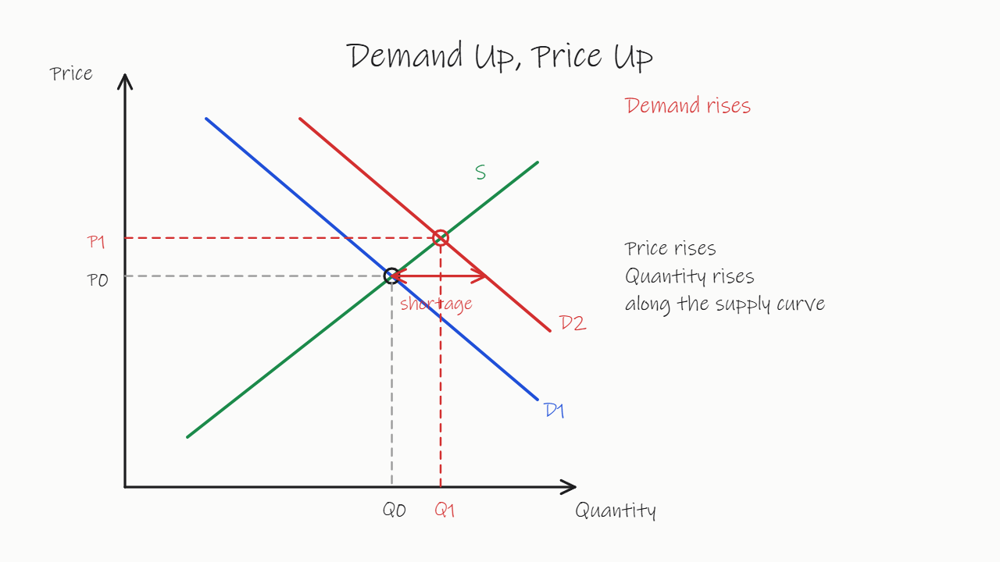
both equilibria and the shortage span exact; shortage label crossed by D1
content 1 · figure matches text 1 · layout 1/2 · complete 1
B19 · Interrupt 2 · supply & demand pass
Question: I don't get the demand shift. Can you show it a simpler way?
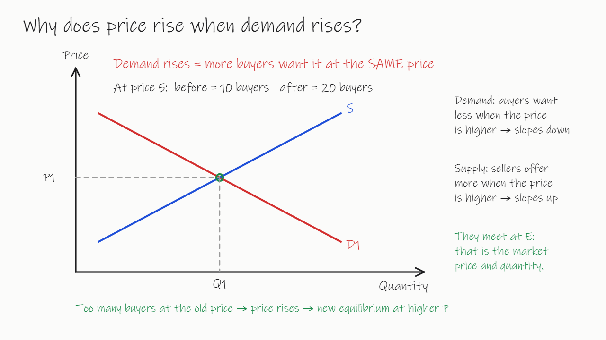
removes D2 and explains in words with a number example (10 then 20 buyers at price 5); clean, but the chart no longer shows the shift
content 1 · figure matches text 1 · layout 2/2 · complete 1 · answers the student 1 · keeps the board intact 1
B22 · Seasons pass
Question: Why do we have seasons?
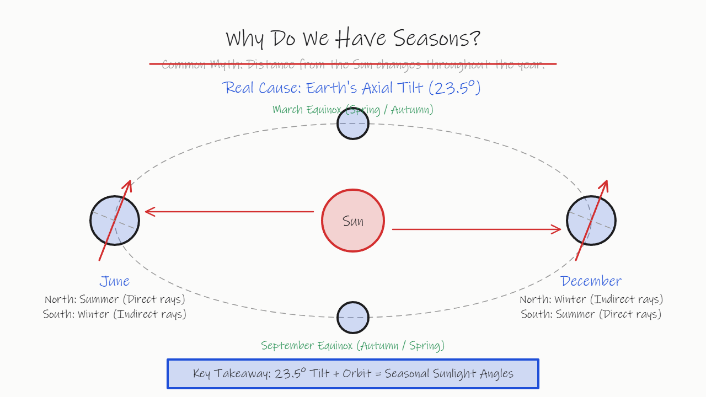
four positions, tilt and June/December labels consistent; top label crossed by an Earth; 'myth' line wording loose (distance does change slightly)
content 1 · figure matches text 1 · layout 1/2 · complete 1
B54 · Pythagoras pass
Question: Why does the Pythagorean theorem work?
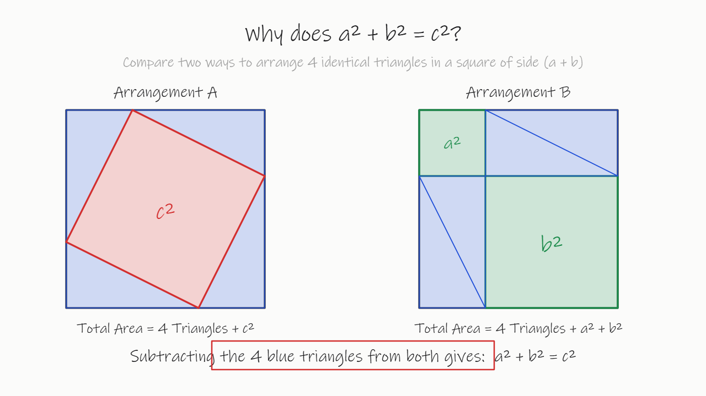
two-arrangement proof, geometry exact; highlight box misplaced over the last sentence
content 1 · figure matches text 1 · layout 1/2 · complete 1
B52 · Quadratic pass
Question: Solve x² − 5x + 6 = 0. (Switch to a simpler method midway.)
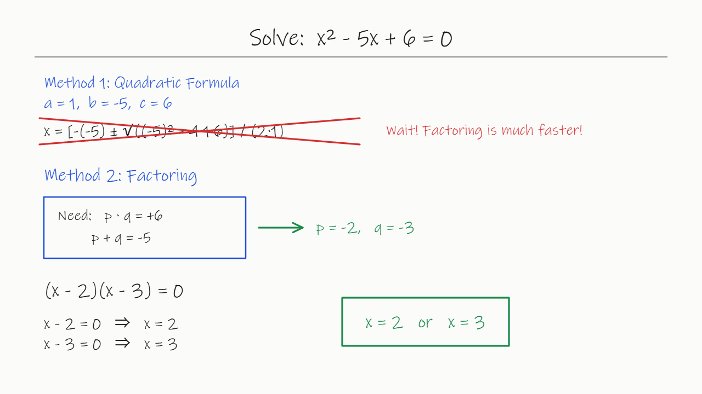
formula struck out on purpose, then factoring
content 1 · figure matches text 1 · layout 2/2 · complete 1
B40 · Supply & demand fail
Question: What happens to the price when demand rises?
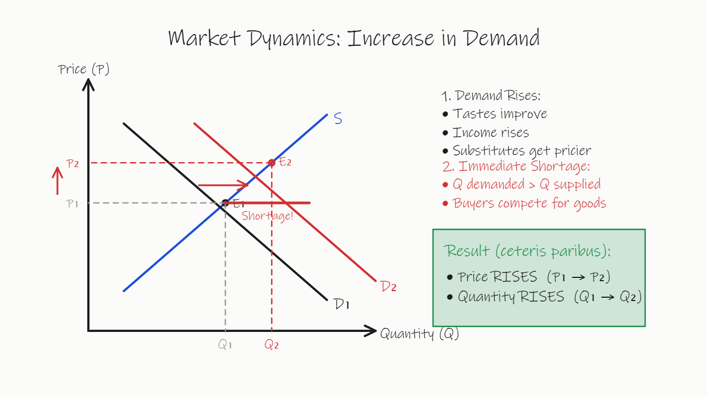
E2 marked on the supply line about 39 px above the true D2-S crossing, so P2 and Q2 are read from the wrong point; labels crossed by lines
content 1 · figure matches text 0 · layout 1/2 · complete 1
B06 · Photosynthesis (zh) pass
Question: 光合作用发生在细胞的哪个部分？
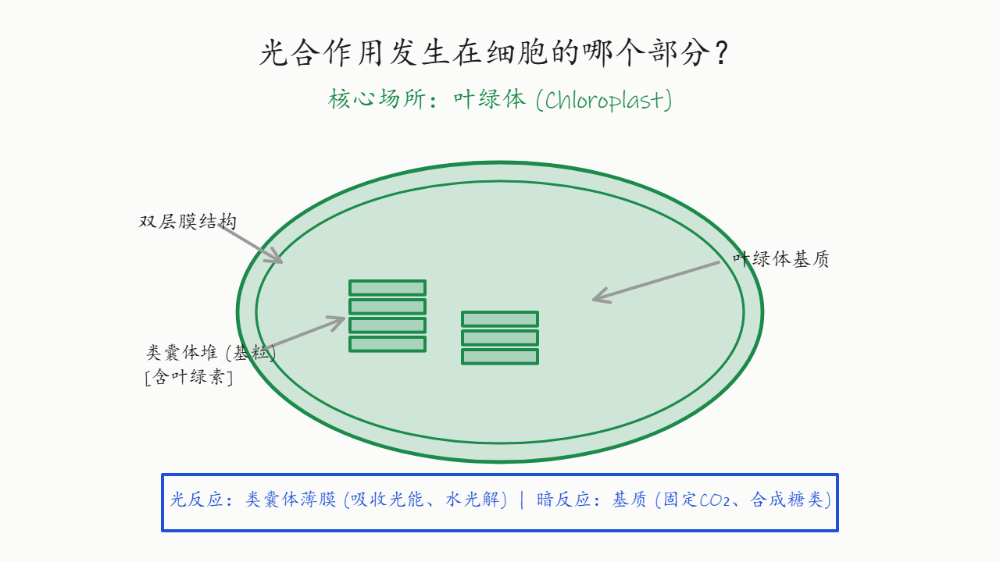
chloroplast with double membrane, grana, stroma, light/dark reaction sites; one label crossed by the outline
content 1 · figure matches text 1 · layout 1/2 · complete 1
B20 · Interrupt 1 · seasons fail
Question: Wait — in northern summer, isn't Earth farther from the Sun? Why is it hotter then?
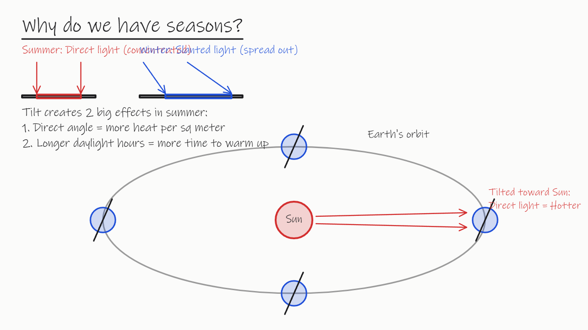
'Tilted toward Sun' label and rays placed at the Earth that leans away; two labels overprinted at the top; text runs across the orbit
content 1 · figure matches text 0 · layout 0/2 · complete 1 · answers the student 1 · keeps the board intact 0
B34 · Interrupt 2 · supply & demand pass
Question: I don't get the demand shift. Can you show it a simpler way?
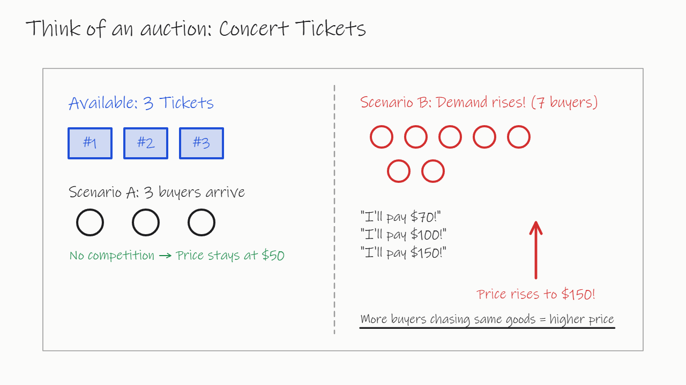
wiped the board for a concert-ticket auction (3 tickets, 3 then 7 buyers); clear
content 1 · figure matches text 1 · layout 2/2 · complete 1 · answers the student 1 · keeps the board intact 0
B02 · Interrupt 3 · arrow fail
Question: What does this arrow mean?
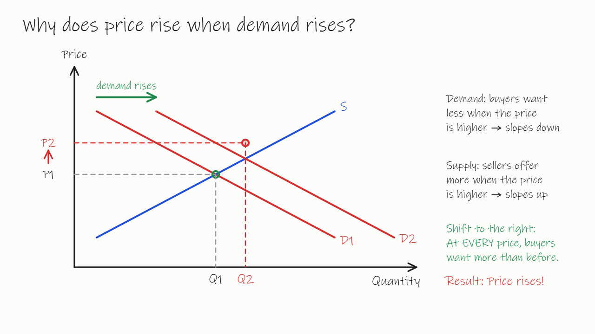
explanation right, but the new equilibrium dot floats above the D2-S crossing, so P2 is drawn too high
content 1 · figure matches text 0 · layout 2/2 · complete 1 · answers the student 1 · keeps the board intact 1
B43 · Seasons pass
Question: Why do we have seasons?
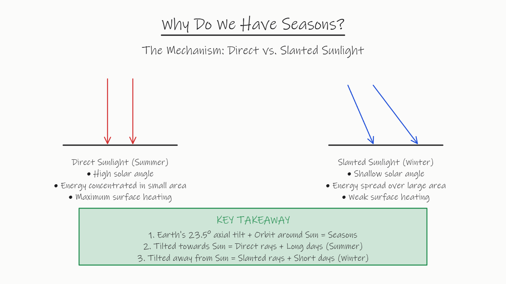
final board shows direct vs slanted rays and takeaway; the orbit diagram shown before the erase is consistent (June toward, December away)
content 1 · figure matches text 1 · layout 2/2 · complete 1
B63 · Supply & demand pass
Question: What happens to the price when demand rises?
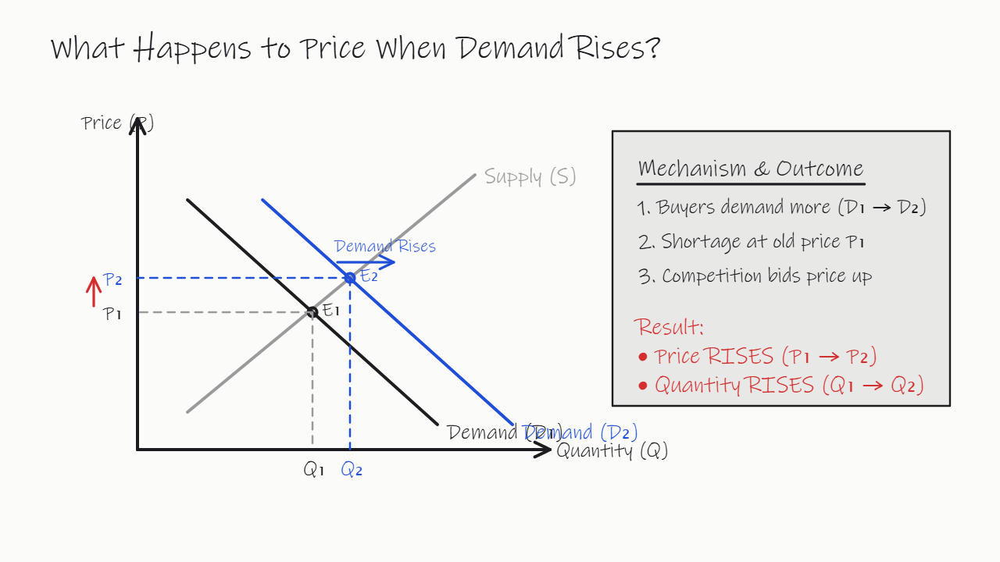
both equilibria exact, mechanism box good; D1 and D2 labels overprinted, axis labels crossed
content 1 · figure matches text 1 · layout 1/2 · complete 1
B32 · Interrupt 2 · supply & demand pass
Question: I don't get the demand shift. Can you show it a simpler way?
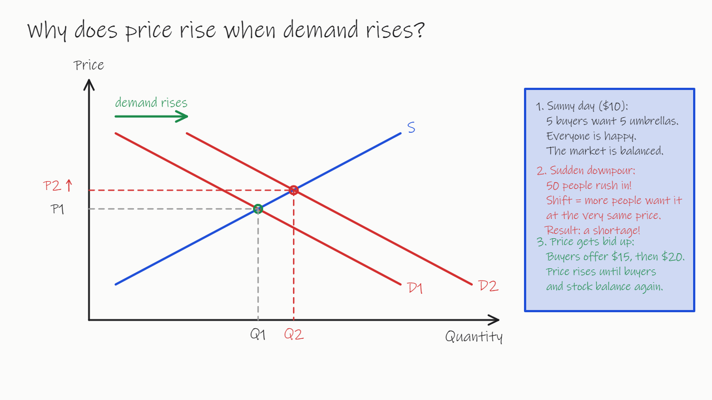
umbrella-shop story in a box, E2 with P2 and Q2 exact
content 1 · figure matches text 1 · layout 2/2 · complete 1 · answers the student 1 · keeps the board intact 1
B50 · Seasons fail
Question: Why do we have seasons?
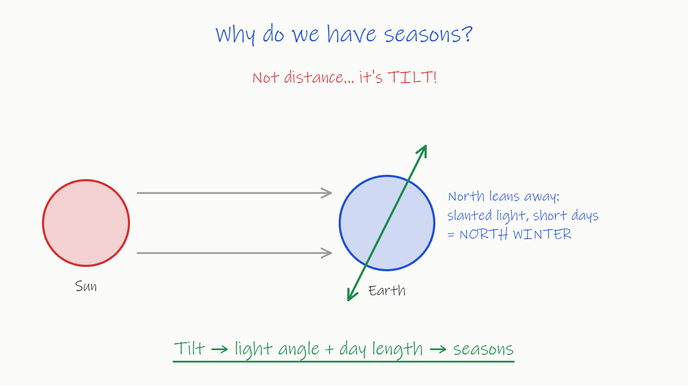
the axis is drawn once and never changes: in the summer step it leans away from the Sun while the text says 'north leans toward Sun', so one of the two steps contradicts the figure
content 1 · figure matches text 0 · layout 2/2 · complete 1
B48 · Pythagoras pass
Question: Why does the Pythagorean theorem work?
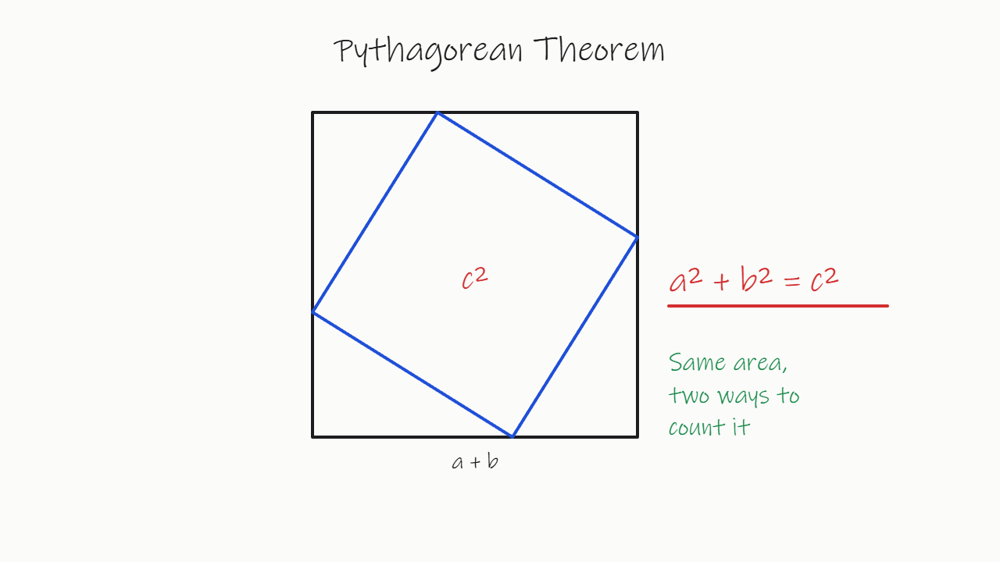
algebra shown then erased; final board sparse, sides not labelled a and b
content 1 · figure matches text 1 · layout 2/2 · complete 1
B45 · Quadratic pass
Question: Solve x² − 5x + 6 = 0. (Switch to a simpler method midway.)
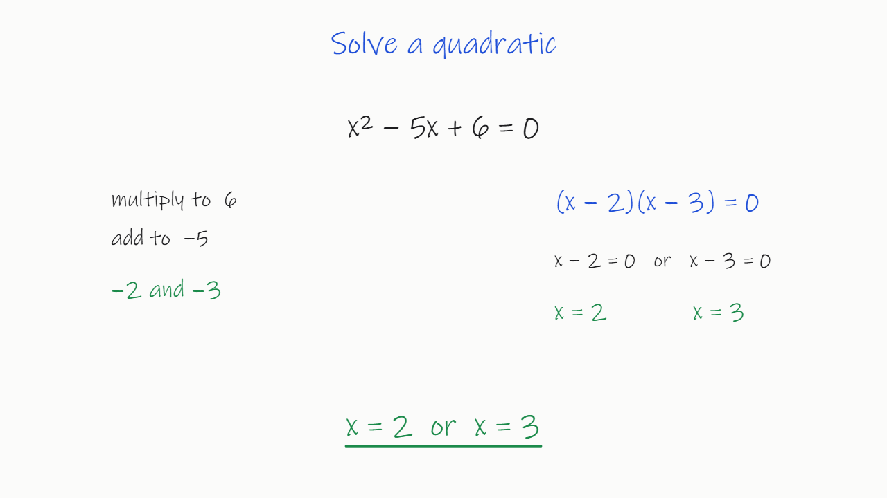
formula tried and erased, then factoring
content 1 · figure matches text 1 · layout 2/2 · complete 1
B30 · Supply & demand borderline
Question: What happens to the price when demand rises?
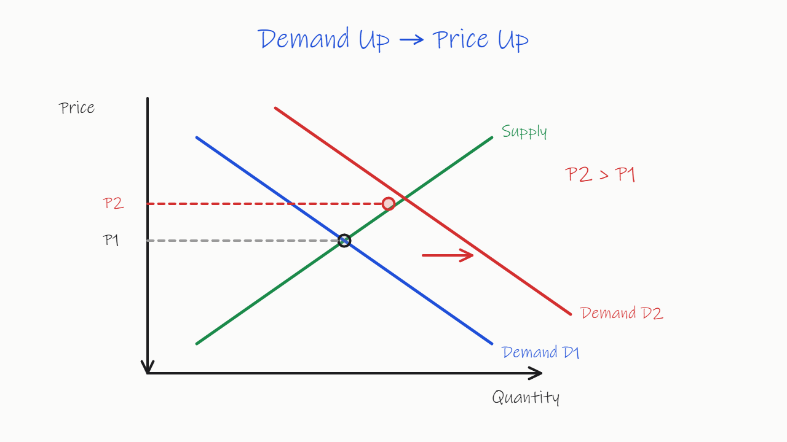
new equilibrium dot about 27 px off the crossing; vertical axis arrowhead points down; no quantity labels
content 1 · figure matches text 1 · layout 2/2 · complete 1
B29 · Photosynthesis (zh) pass
Question: 光合作用发生在细胞的哪个部分？
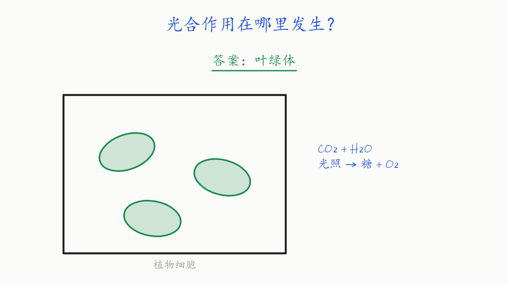
correct and clean; chloroplast label was erased so the ovals end unlabelled
content 1 · figure matches text 1 · layout 2/2 · complete 1
B03 · Interrupt 1 · seasons fail
Question: Wait — in northern summer, isn't Earth farther from the Sun? Why is it hotter then?
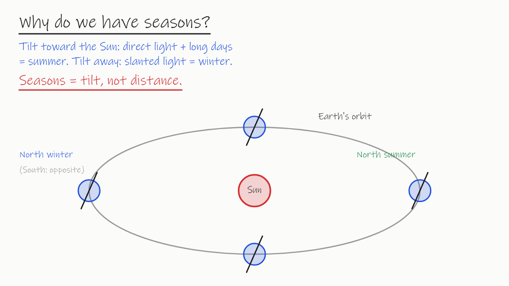
season labels swapped: 'North winter' put at the Earth leaning toward the Sun; one label crossed by the orbit; the distance facts were erased from the final board
content 1 · figure matches text 0 · layout 1/2 · complete 1 · answers the student 1 · keeps the board intact 1
B37 · Interrupt 2 · supply & demand pass
Question: I don't get the demand shift. Can you show it a simpler way?
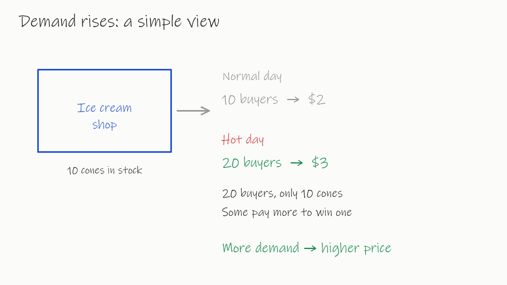
wiped the board for an ice-cream shop example (10 cones, 10 then 20 buyers); clear
content 1 · figure matches text 1 · layout 2/2 · complete 1 · answers the student 1 · keeps the board intact 0
B38 · Interrupt 3 · arrow borderline
Question: What does this arrow mean?
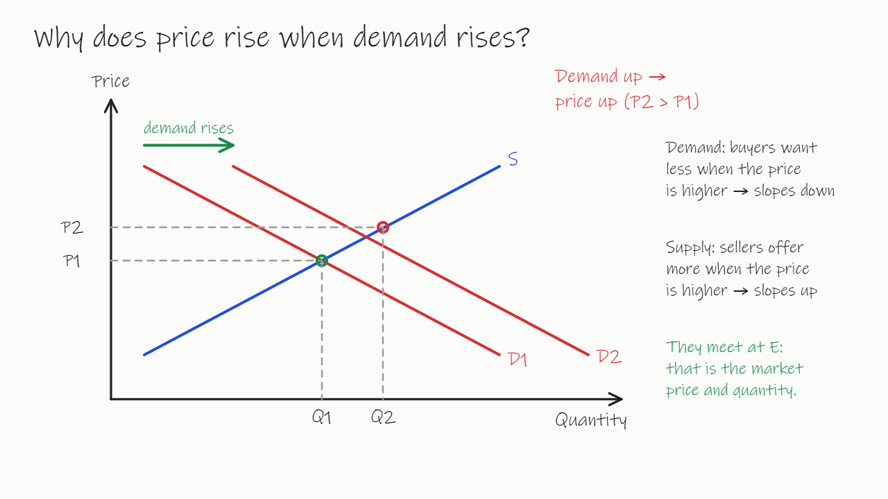
E2 dot about 28 px past the true crossing: reclassified as borderline for consistency with B30 and B47
content 1 · figure matches text 1 · layout 2/2 · complete 1 · answers the student 1 · keeps the board intact 1
B09 · Seasons fail
Question: Why do we have seasons?
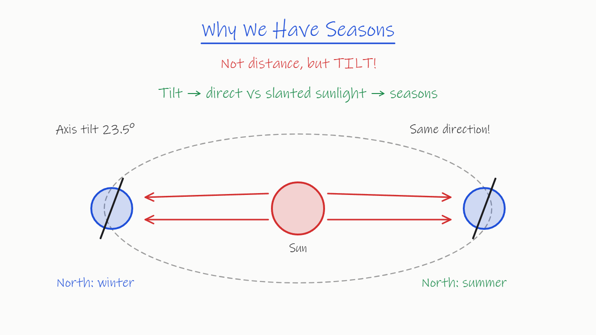
labels swapped: the Earth whose north end leans toward the Sun is labelled 'North: winter' and the other 'North: summer'
content 1 · figure matches text 0 · layout 2/2 · complete 1
B21 · Supply & demand fail
Question: What happens to the price when demand rises?
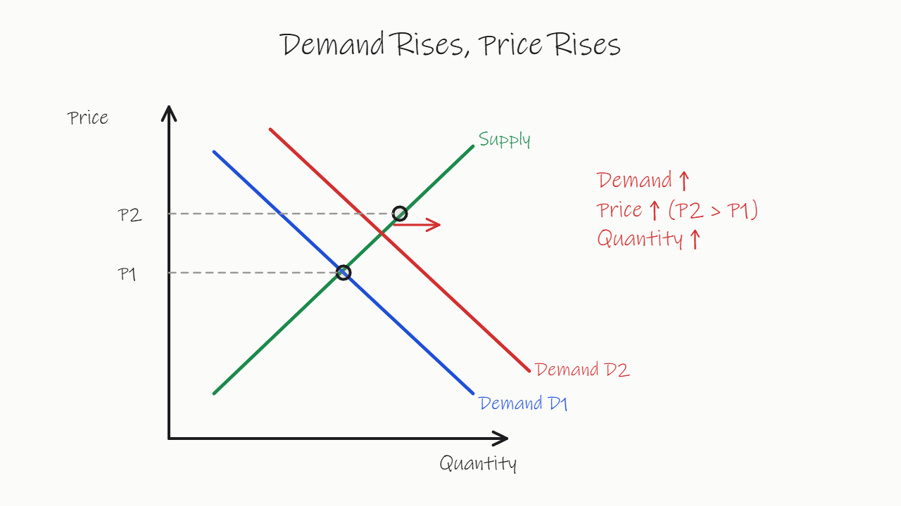
new equilibrium dot sits on the supply line about 37 px past the true D2-S crossing; no quantity labels
content 1 · figure matches text 0 · layout 2/2 · complete 1
B64 · Interrupt 2 · supply & demand pass
Question: I don't get the demand shift. Can you show it a simpler way?
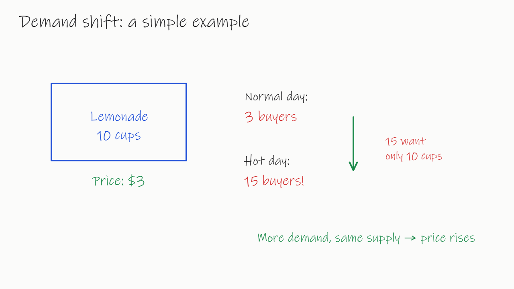
wiped the board for a lemonade stand example (10 cups, 3 then 15 buyers); clear
content 1 · figure matches text 1 · layout 2/2 · complete 1 · answers the student 1 · keeps the board intact 0
B39 · Seasons fail
Question: Why do we have seasons?
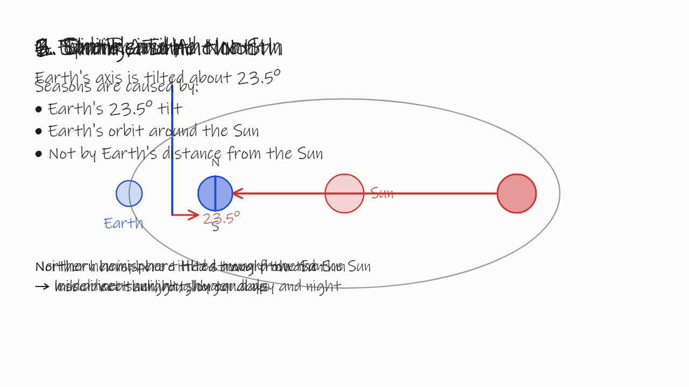
every step title written on the same spot (illegible), text over the orbit, axis drawn vertical, an unexplained second red disc
content 0 · figure matches text 0 · layout 0/2 · complete 0
B16 · Pythagoras fail
Question: Why does the Pythagorean theorem work?
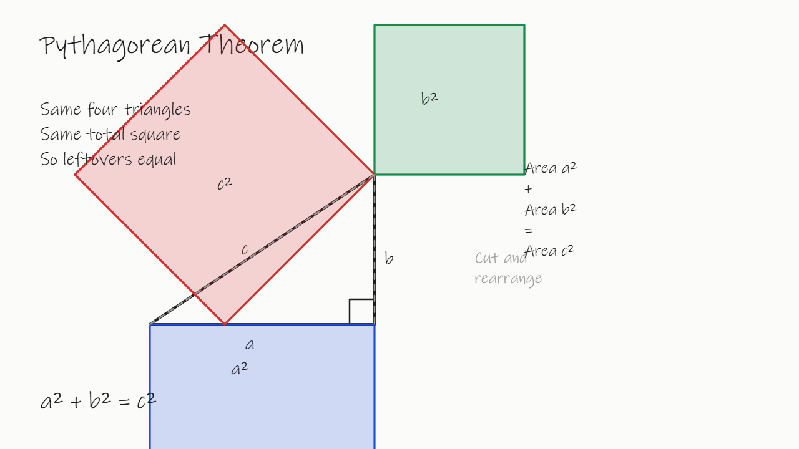
c-square is not built on the hypotenuse and has the wrong size; b-square not on leg b; figure covers the title, runs off the board; no four triangles though narration refers to them
content 0 · figure matches text 0 · layout 0/2 · complete 0
B57 · Quadratic pass
Question: Solve x² − 5x + 6 = 0. (Switch to a simpler method midway.)
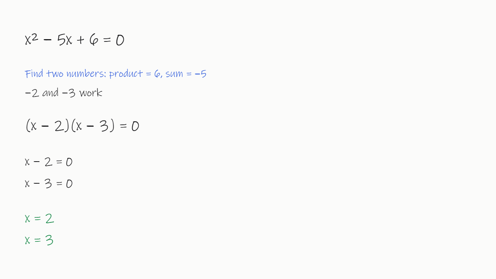
correct, but never switches method midway as the question asked
content 1 · figure matches text 1 · layout 2/2 · complete 0
B47 · Supply & demand borderline
Question: What happens to the price when demand rises?
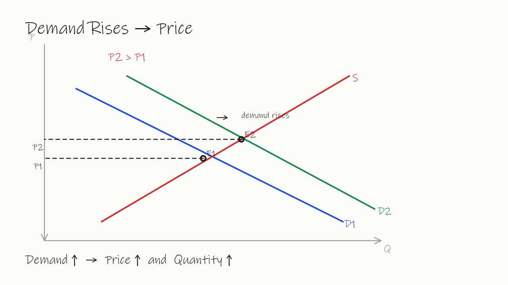
E1 dot about 23 px left of the crossing, E2 exact; vertical axis arrowhead points down; title collides with the axis label; a label crossed by the supply line
content 1 · figure matches text 1 · layout 1/2 · complete 1
B53 · Photosynthesis (zh) pass
Question: 光合作用发生在细胞的哪个部分？
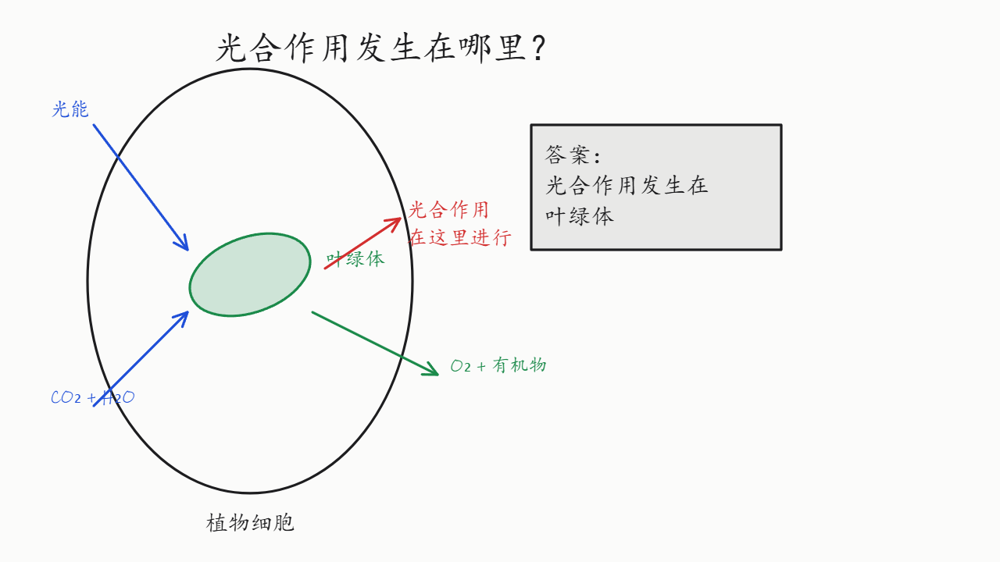
correct, simple; two labels crossed by arrows or the cell outline
content 1 · figure matches text 1 · layout 1/2 · complete 1
B25 · Interrupt 1 · seasons fail
Question: Wait — in northern summer, isn't Earth farther from the Sun? Why is it hotter then?
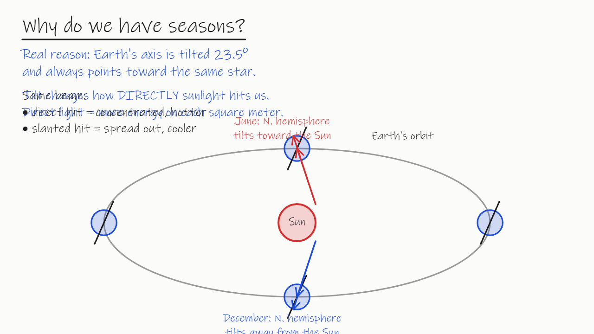
June/December labels attached to the two positions where the axis leans neither toward nor away; two text blocks overprinted; bottom label runs off the board
content 1 · figure matches text 0 · layout 0/2 · complete 1 · answers the student 1 · keeps the board intact 0
B14 · Interrupt 2 · supply & demand fail
Question: I don't get the demand shift. Can you show it a simpler way?
new heading written on top of the title; marked Q1 and Q2 do not lie on the curves at the chosen price; two different Q1 labels
content 1 · figure matches text 0 · layout 0/2 · complete 1 · answers the student 1 · keeps the board intact 0
B33 · Interrupt 3 · arrow fail
Question: What does this arrow mean?
a grey box covers the whole chart and the explanation is written across the curves
content 1 · figure matches text 1 · layout 0/2 · complete 1 · answers the student 1 · keeps the board intact 0
B51 · Supply & demand pass
Question: What happens to the price when demand rises?
geometry exact but supply and D1 are never labelled, supply is a short stub, quantity effect omitted
content 1 · figure matches text 1 · layout 1/2 · complete 0
B27 · Interrupt 2 · supply & demand pass
Question: I don't get the demand shift. Can you show it a simpler way?
plain-words note plus a before/after table at two prices; neat
content 1 · figure matches text 1 · layout 2/2 · complete 1 · answers the student 1 · keeps the board intact 1
B15 · Seasons fail
Question: Why do we have seasons?
statements correct but the figure never shows the Sun-Earth geometry; Sun drawn over the first sentence, labels crossed by arrows
content 1 · figure matches text 0 · layout 1/2 · complete 0
B61 · Pythagoras fail
Question: Why does the Pythagorean theorem work?
c-square drawn axis-aligned beside the triangle, not on the hypotenuse; right-hand square labelled c2 has the wrong size and shows no triangles; no actual argument
content 0 · figure matches text 0 · layout 1/2 · complete 0
B35 · Quadratic fail
Question: Solve x² − 5x + 6 = 0. (Switch to a simpler method midway.)

blank board: every instruction omits the op field, so nothing can be drawn
content 0 · figure matches text 0 · layout 0/2 · complete 0
B31 · Supply & demand fail
Question: What happens to the price when demand rises?
blank board: every instruction uses 'type' instead of 'op', so nothing can be drawn
content 0 · figure matches text 0 · layout 0/2 · complete 0
B12 · Photosynthesis (zh) pass
Question: 光合作用发生在细胞的哪个部分？
cell with wall, membrane, nucleus, vacuole, chloroplasts, zoom to grana; the chloroplast label is crossed by the cell wall and the zoom line
content 1 · figure matches text 1 · layout 1/2 · complete 1
B23 · Interrupt 1 · seasons fail
Question: Wait — in northern summer, isn't Earth farther from the Sun? Why is it hotter then?
explanation and summer/winter labels correct, but new text and two empty boxes are drawn over existing text and the orbit
content 1 · figure matches text 1 · layout 0/2 · complete 1 · answers the student 1 · keeps the board intact 0
B28 · Interrupt 2 · supply & demand pass
Question: I don't get the demand shift. Can you show it a simpler way?
fixed-price line with Q1 and Q2 exact on the two curves; two labels crossed by lines
content 1 · figure matches text 1 · layout 1/2 · complete 1 · answers the student 1 · keeps the board intact 1
B56 · Interrupt 3 · arrow fail
Question: What does this arrow mean?
marked points lie on neither curve, Q2 too far right; 'same P' written over P2, labels crossed by lines
content 1 · figure matches text 0 · layout 0/2 · complete 1 · answers the student 1 · keeps the board intact 0
B49 · Supply & demand pass
Question: What happens to the price when demand rises?
both equilibria exact with P and Q guides; result text overlaps the S label; D1 and D2 same colour
content 1 · figure matches text 1 · layout 1/2 · complete 1
B08 · Interrupt 2 · supply & demand pass
Question: I don't get the demand shift. Can you show it a simpler way?
same-price arrow, shortage and E2 all exact, plus a short bike story (story assumes fixed stock while the chart shows quantity rising)
content 1 · figure matches text 1 · layout 2/2 · complete 1 · answers the student 1 · keeps the board intact 1
Data, code and method: see the README in the repository.